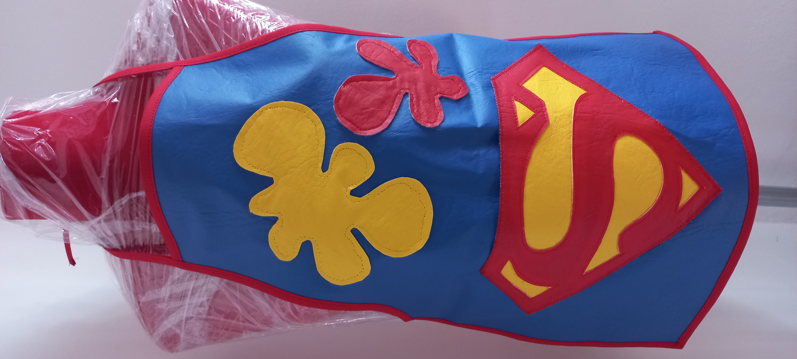
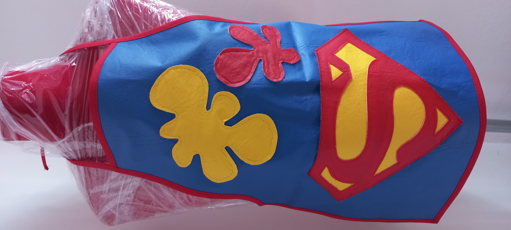

Desde que nacen, los chicos van demostrando interés por algunas cosas y desestimando otras.
Los padres podemos hacer muchas cosas para estimular su espíritu de búsqueda y exploración y acompañarlos en el camino de acercarse a eso que "serán" o querrán ser en el futuro.
Por eso KIDS' APRON ofrece una serie de delantales personalizados para que tu pequeño aprenda jugando y explorando en diferentes oficios.

Cocinar es un gran juego que estimula la creatividad de los niños, y es una manera ideal para compartir en familia y con amigos.Divirtiéndose mientras cocinan, los niños se habitúan al trabajo en equipo, ganan independencia y confianza y se hacen más conscientes de sus responsabilidades.

El arte debe estar presente en el niño como expresión de su vida cotidiana que le sirva para modelar su comportamiento, desarrollar la inteligencia creativa e inventiva para su trabajo creativo de las formas visuales de acuerdo a su observación, curiosidad y su emotividad ira desarrollando su propio concepto.

Desarrollar la creatividad y la inteligencia del niño a través del arte, es enseñarle a vencer sus temores expresar sus deseos, emociones, sus fantasías, el desarrollo de la motricidad fina.
DISEÑOS
DELANTAL ARTISTA
Realizado en ecocueroMedidas:largo:50cm; ancho:41cm
DELANTAL GIRL
Realizado en ecocueroMedidas:largo:50cm; ancho:41cm
DELANTAL BATMAN
Realizado en ecocueroMedidas:largo:50cm; ancho:41cm
DELANTAL BELGRANO
Realizado en ecocueroMedidas:largo:50cm; ancho:41cm

DELANTAL FLASH
Realizado en ecocueroMedidas:largo:50cm; ancho:41cm
DELANTAL ILOVEBALL
Realizado en ecocueroMedidas:largo:50cm; ancho:41cm

DELANTAL CONEJO
Realizado en ecocueroMedidas:largo:50cm; ancho:41cm
DELANTAL WOMAN
Realizado en ecocueroMedidas:largo:50cm; ancho:41cm
 

DELANTAL SUPERMAN
Realizado en ecocueroMedidas:largo:50cm; ancho:41cm